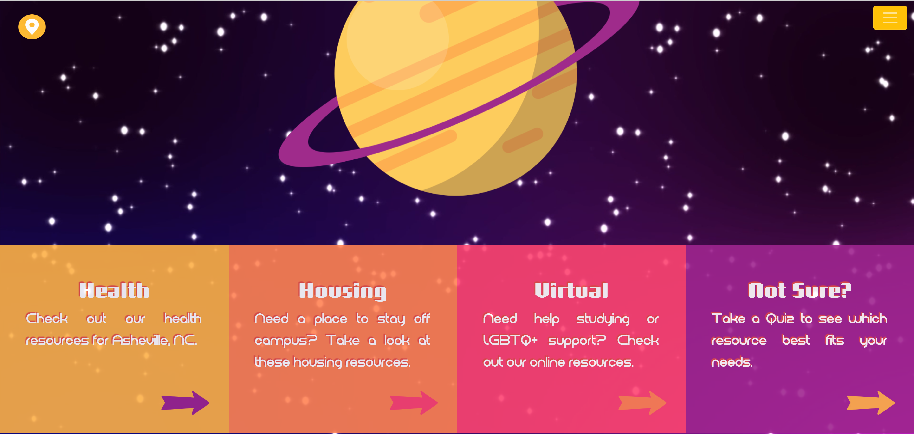

James Vester Miller
 jamesvestermiller.com is a website for Asheville's James Vester Miller Walking Trail, which highlights the life and work of Black architect James Vester Miller and is led by Miller's grandaughter Andrea Clark.
jamesvestermiller.com is a website for Asheville's James Vester Miller Walking Trail, which highlights the life and work of Black architect James Vester Miller and is led by Miller's grandaughter Andrea Clark.
White Normativity

Using interactive maps, this project utilized research from Dr. Megan Underhill on how white parents speak to their children about race during times of unrest, such as the protests in responce to Michael Brown's death.
My Chemical Romance Redesign

A mockup redesign of the official My Chemical Romance website, using a more modern design that celebrates the band's discography.
Photon

A nonlinear horror experience desguised as an ordinary corporate tech company site and using AI-generated images
Resource Universe

A large collection of health, housing, and digital resources for incoming UNCA students to suit a number of different needs.
Dahlia Laboratories
 A mockup homepage for a fictional corporate tech company.
A mockup homepage for a fictional corporate tech company.
LGBTQ+ Asheville

A prototype for a site mapping LGBTQ+ resources and safe spaces around Asheville, NC.